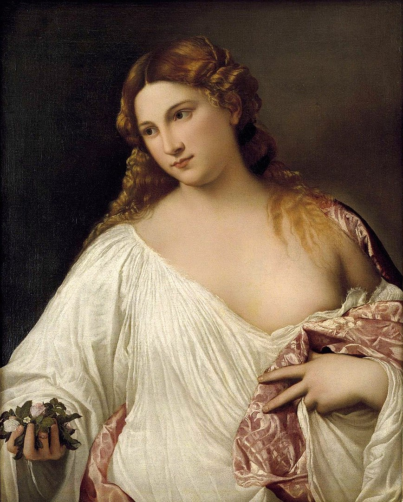

Tycjan, Tintoretto, Veronese
W wieku szesnastym Wenecja była jednym z największych i najbogatszych miast Europy. Rozliczne zamówienia na dzieła malarskie, pochodzące także spoza granic Najjaśniejszej Republiki, sprzyjały powstaniu specyficznego klimatu innowacji i współzawodnictwa.
„Tycjan, Tintoretto, Veronese: rywale w renesansowej Wenecji” to pierwsza duża wystawa poświęcona artystycznej rywalizacji owych trzech najwybitniejszych malarzy weneckich szesnastego stulecia: Tycjana, Tintoretta oraz Paola Veronese. Choć daty urodzin Tycjana i Veronesa dzieli lat czterdzieści, kariery artystyczne wszystkich trzech malarzy rozwijały się równolegle przez nieomal cztery dekady. Świadectwo ich wzajemnego artystycznego dialogu staje się najlepiej widoczne, gdy ich wspaniałe płótna zawisną jedno obok drugiego. Widać wówczas niezbicie, jak głęboki wywierali na siebie wpływ i jak krytycznie traktowali swe dzieła.
Tycjan, Tintoretto i Veronese dzięki swej malarskiej technice, bogactwu kolorystyki oraz często pastoralnej i pełnej zmysłowości tematyce wspólnie zdefiniowali „styl malarstwa weneckiego”, który zainspirował niezliczoną rzeszę późniejszych artystów. Wystawa przygotowana przez bostońskie Museum of Fine Arts prezentuje około sześćdziesięciu malowideł pochodzących z prestiżowych muzeów europejskich oraz amerykańskich, a także obrazy z miejsc, dla których je malowano — weneckich kościołów.